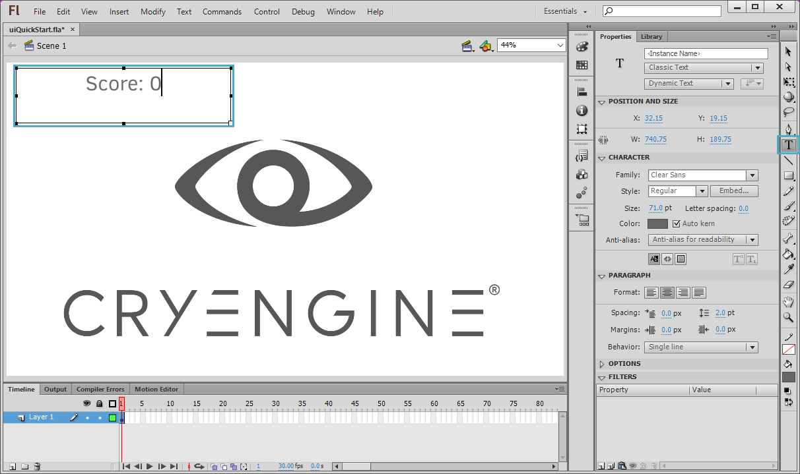
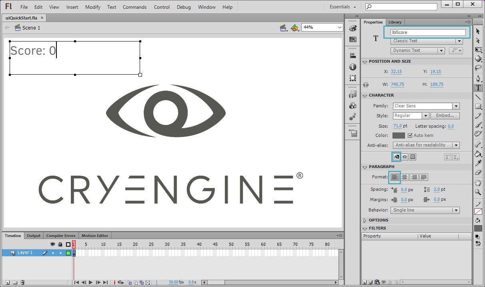
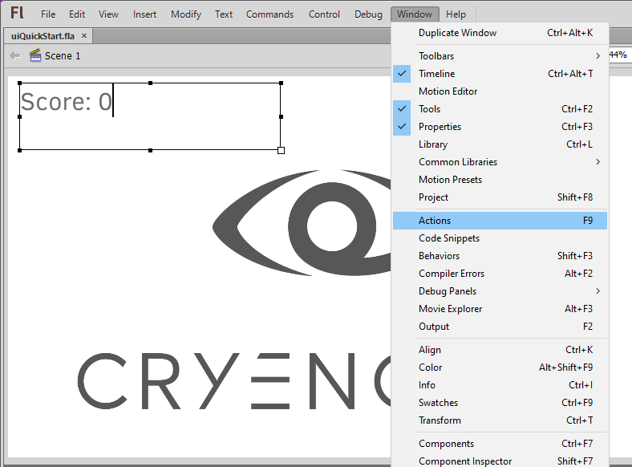
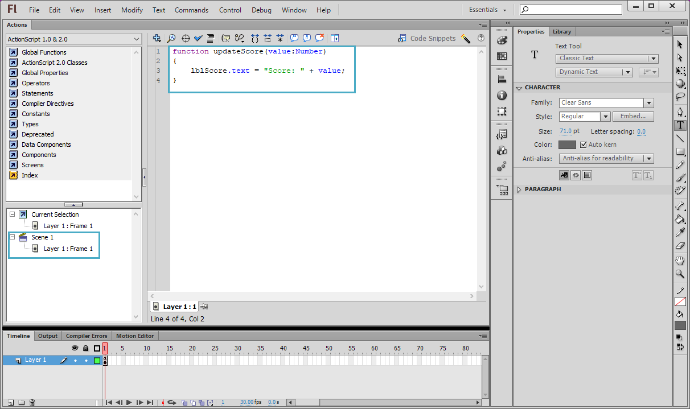
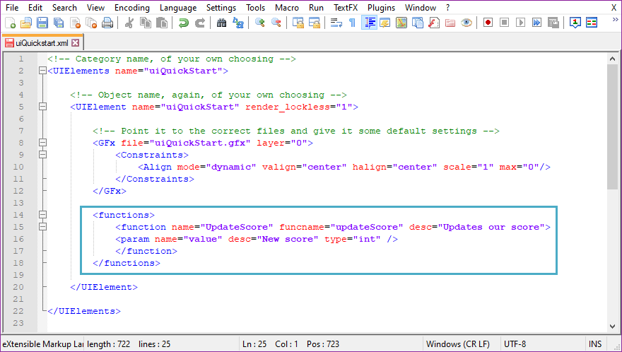
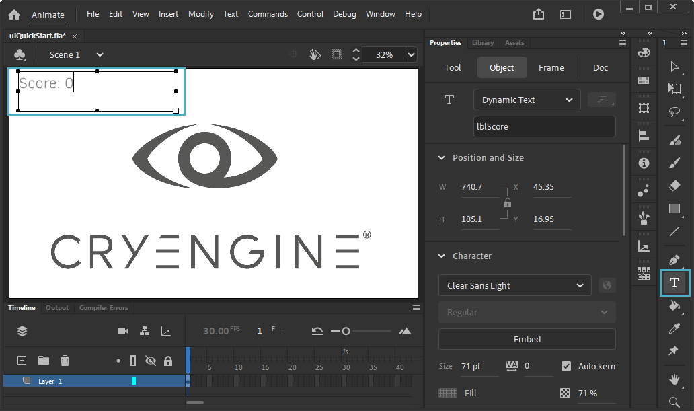
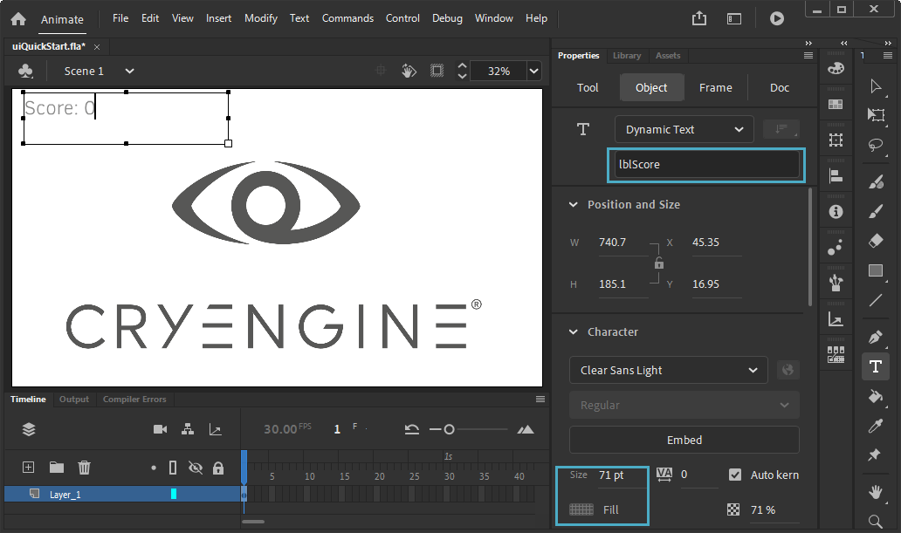
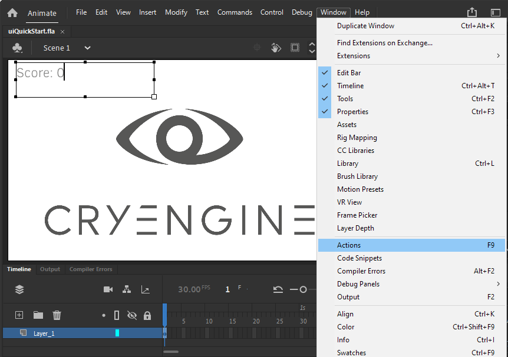
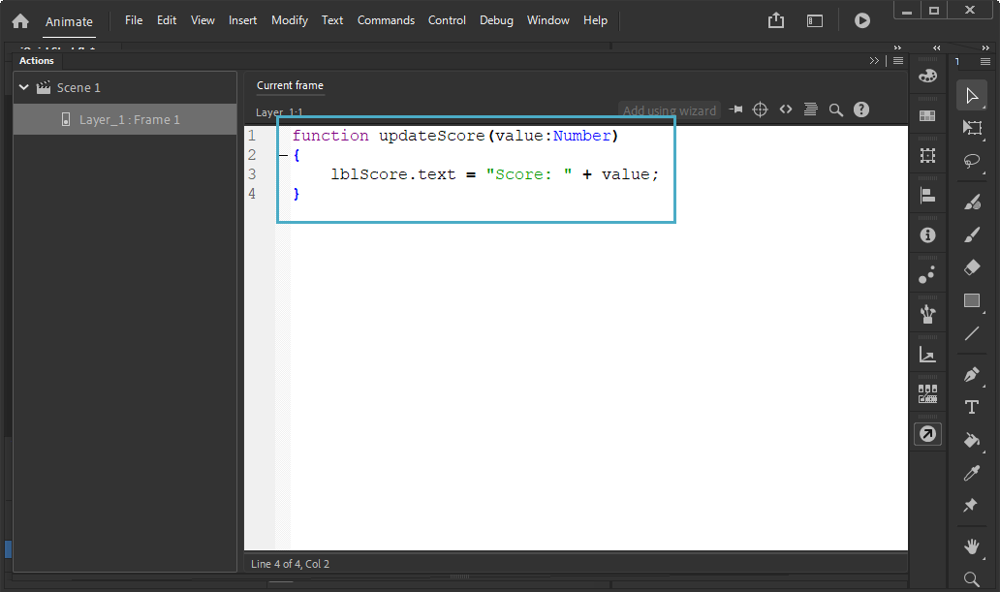

Как мы раскрываем результаты?
Теперь, когда мы изучили, как предоставлять как векторные, так и растровые изображения, в следующих главах мы рассмотрим, как можно использовать визуальные сценарии для вызова функции в вашей игре, которая изменит текстовую метку во Flash.
Рассматривая, как вы научитесь предоставлять функцию, которая предоставляет динамическому текстовому полю значение для печати, вы узнаете ценный аспект UI и то, как легко отображать свой счет или игровое время на экране для более увлекательного игрового процесса.
Представление функции для динамического текста
Масштабная форма 3
Нарисуйте динамическое текстовое поле внутри холста Flash и введите «Оценка: 0."в коробке.

Динамическое текстовое полеНазовите экземпляр "lblScore" и нажмите кнопку Выбираемая кнопка отключить выделение текста, если курсор включен. Вы также можете установить Параграф опция выравнивания по левому краю.

lblScoreОткройте окно действий, нажав F9 или собираюсь Окно → Действия в меню.

Окно → ДействияУчитывая, что это самая базовая форма ActionScript, которую мы можем ввести, мы разместим скрипт в слое по умолчанию как есть (Сцена 1 → Слой 1: Кадр 1) и введем следующий код, чтобы представить нашу функцию и позволить Scaleform вызывать ее:
function updateScore(value:Number) { lblScore.text = "Score: " + value; }
Разместите скрипт на слое по умолчанию.Теперь, когда вы определили свою функцию, вы можете скомпилировать файл GFx через экспортер, как описано в разделе Глава 2. Flash и Gfx, затем введите следующие изменения в файл UI Elements XML, чтобы сделать функцию доступной для визуальных сценариев:
<functions> <function name="UpdateScore" funcname="updateScore" desc="Updates our score"> <param name="value" desc="New score" type="int" /> </function> </functions>
Предоставление функции визуальному сценарию
Масштабная форма 4
Нарисуйте динамическое текстовое поле внутри холста Flash и введите «Оценка: 0». в коробке.

Динамическое текстовое полеНазовите экземпляр «lblScore» и убедитесь, что выбран подходящий цвет и размер.

lblscoreОткройте окно действий, нажав F9 или собираюсь Окно → Действия в меню.

Окно → ДействияУчитывая, что это самая базовая форма ActionScript, которую мы можем ввести, мы разместим скрипт на слое по умолчанию как есть (Сцена 1, Слой 1, Кадр 1) и введем следующий код, чтобы представить нашу функцию и позволить Scaleform вызывать ее:

Разместите скрипт на слое по умолчанию.function updateScore(value:Number) { lblScore.text = "Score: " + value; }Теперь, когда мы определили нашу функцию, мы можем скомпилировать наш файл GFx через экспортер, как описано в разделе Глава 2. Flash и Gfx, затем введите следующие изменения в наш файл UI Elements XML, чтобы сделать функцию доступной для визуального скриптинга:
<functions> <function name="UpdateScore" funcname="updateScore" desc="Updates our score"> <param name="value" desc="New score" type="int" /> </function> </functions>
Предоставление функции визуальному сценарию